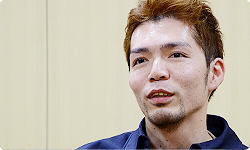

<div class="l-category-local-header">
<div class="category-local-header">
<div class="category-local-heading"><span>社長が訊く</span>
<div class="category-local-sub">IWATA ASKS


<div class="l-soft-topic-path is-block">
<div class="l-soft-topic-path-inner">
<div class="soft-topic-path">
<ul class="topic-path"><li class="topic-path-item"><span>New スーパールイージ U</span></li></ul>


<div id="page-container">
<header class="interviewheader">
<h2 class="interviewheader__ttl"><span class="subtext">社長が訊く</span>『New スーパールイージ U』</h2>

</header>
<div class="hero-container">
<div class="hero__img">
<p class="hero__note">本文の一部を引用される場合は、必ず、本ページのURLを明記、<br>または本ページへのリンクをしていただくようお願いいたします。

<div class="pageindex-container">
<p class="pageindex__ttl">目次
<ul class="pageindex__body">
<li class="pageindex__item active">1. 『New マリオ 2』に先を越されて</li>
<li class="pageindex__item">2. 「ひとくち乗ります」</li>
<li class="pageindex__item">3. トッテンで複数の問題を解決</li>
<li class="pageindex__item">4. 「もう１回」</li>
<li class="pageindex__item">5. 「遊び比べてほしい」</li>
</ul>

<div class="interview-container">
<h3 class="interview__ttl">1. 『New マリオ 2』に先を越されて</h3>

岩田
: きょうは<br>『New スーパールイージ U』についてお訊きします。<br>ディレクターの竹本さんは、３年かけて開発した<br>『New スーパーマリオブラザーズ U』（※1）を<br>昨年の１２月に発売しましたが、それから休む間もなく<br>つくり続けることになりましたね。

※1『New スーパーマリオブラザーズ U』＝２０１２年１２月に、Wii Uと同時に発売されたアクションゲーム。


竹本
: はい。『New マリオ U』を<br>Wii Uのローンチ（同時発売）に合わせてつくり、<br>「その追加コンテンツ（※2）を」、ということで<br>手塚さんたちといっしょに考えはじめたのが<br>この『New ルイージ U』です。


※2追加コンテンツ＝『New スーパーマリオブラザーズ U』を所有している人が追加できるソフトとして、２０１３年６月１９日から配信開始。また、『New スーパーマリオブラザーズ U』を持っていない人でも遊べるパッケージ版もあり、２０１３年７月１３日から年内限定で発売。


岩田
: 結果的に、「追加コンテンツ」というよりは、<br>「新しくもう１本つくった」と言ってもいいくらいの<br>中身になりましたね？


竹本
: そうですね。


手塚
: 僕は、『New マリオ U』よりも先に出た<br>3DSの『New スーパーマリオブラザーズ 2』（※3）にも<br>かかわっていましたので、ずっと『マリオ』を<br>つくり続けていた感じです（笑）。


※3『New スーパーマリオブラザーズ 2』＝２０１２年７月に、ニンテンドー3DS用ソフトとして発売されたアクションゲーム。


岩田
: 今回、マリオは登場しませんけどね（笑）。


手塚
: あ、そうですね（笑）。


岩田
: 今回はある意味、<br>『マリオ』にとっての追加コンテンツのありかたを、<br>ずっと考え続けた開発だった<br>と言ってもいいんじゃないでしょうか？


手塚
: おっしゃるとおりです。<br>追加コンテンツについて<br>こんなに深く考えることになるとは、<br>思ってもみませんでしたから。


岩田
: そもそも最初は<br>どんな感じではじまったんですか？


手塚
: 最初はこんな大仕事の予定ではなかったんです。<br>3DSの『New マリオ 2』でもやったような<br>サブ的な遊びを拡張していくようなことを<br>はじめは考えていました。<br>たとえば、「ブーストモード」のコースを<br>どんどん追加していくのはどうだろうとか。


岩田
: 『New マリオ 2』では、<br>「コインラッシュモード」の専用コースが<br>追加パック（※4）として遊べますけど、<br>『New マリオ U』でも同じようなことを<br>考えたわけですね。

※4追加パック＝「コインラッシュモード」専用のコースをまとめた有料のパックのこと。追加パックは第１～４弾まであり、全１０パックが配信されている。くわしくは、<span>『New スーパーマリオブラザーズ 2』ダウンロードできる追加パックについて</span>を参照。


手塚
: そうです。<br>それは申し合わせていたわけではなくって、<br>偶然だったんですけども・・・。<br>でも僕の記憶だと、ふたつのタイトルで<br>「追加でコースを配信する」ということは決めていましたが、<br>どのような仕様にするかは双方それぞれで考えてもらっていて、<br>ほんの少しですが、先にアイデアが出たのは、<br>『New マリオ 2』よりもこっちのほうが早かったんです。


岩田
: 『New マリオ U』のほうが先だったんですか？


手塚
: そうです。あとから<br>『New マリオ 2』のチームからも<br>「コインラッシュモードの追加パック」という提案があって、<br>とりあえず先に発売される『New マリオ 2』のほうの<br>追加コース企画は進めてもらっていました。<br>しかし、制作していくうちに、<br>アイデアのかぶりが気になってきて<br>『New マリオ U』では別の企画にしようと<br>考えるようになりました。


岩田
: 竹本さん、せっかく先に<br>いいアイデアを考えたのに、<br>あとから考えた人に先を越されてしまうのは<br>何か納得がいかない、みたいな（笑）、<br>そんな気持ちにはならなかったんですか？


竹本
: まあ、先に出されてしまうと、<br>どうしようもないなと（笑）。


岩田
: おお、すごく潔いですね（笑）。


竹本
: いえいえ（笑）。<br>でも、もともと追加コースについては<br>「何で最初から、パッケージソフトの中に入っていないのか？」<br>と思われてしまいそうで、気になっていたこともあり<br>「あっちでやるなら、こっちはもっと良い企画にしてやろう」<br>と前向きに考えました。




岩田
: 『New マリオ 2』の追加パックは、本編を完成させたあとで、<br>お客さんがどのように遊んでいるのかを分析して<br>開発をはじめましたし、本編のボリュームについても、<br>「追加コンテンツがあるから少ない」ということは<br>ないようにしていたつもりですが、<br>それでも、「何で最初から入っていないのか？」と<br>感じられた方もいらっしゃいましたからね。


竹本
: はい。それに、アイデアとしては出ていたものの<br>“「ブーストモード」のコースを追加していく”という方法も、<br>自分のなかではしっくりきていなかったので<br>「じゃあ、ほかにいい方法はないかな？」<br>ということで、検討してみることにしました。


手塚
: そこでひとつの実験をはじめまして、<br>『New マリオ U』のコースを極端に短くして、<br>難易度を高めるようなものを<br>まずつくってもらったんです。


岩田
: それって、今回の『New ルイージ U』に<br>「直接」つながっていますね。


手塚
: そうですね。


岩田
: どうしてコースを短くして、<br>難しくしようと思ったんですか？


手塚
: もともと追加コンテンツは、<br>『New マリオ U』を遊んだ人を前提にしていて、<br>「さらにもっと遊びたい」という人のために<br>つくろうと考えていました。なので、<br>「ある程度は難易度が高くてもいいよ」<br>と言ってたんです。


岩田
: ゲーム上級者を対象に考えていたんですね？


手塚
: そうです。<br>ただ、難易度が高くて、コースが長ければ<br>遊んでいてもしんどくなりますので・・・。


岩田
: くたくたに疲れてしまいますよね。


手塚
: そこで、コースは<br>短めにする必要があると思いました。


岩田
: つまり、遊びのハラハラドキドキの密度を高めて、<br>その一方で、長く遊んでいると緊張感が続かないので、<br>短くしよう、という感じだったんですね。


手塚
: ええ、そうです。


竹本
: 僕は手塚さんとは<br>違う考えかただったんです。


岩田
: と言いますと？


竹本
: 『New マリオ』シリーズは<br>DS、Wii、3DS、Wii Uという流れで<br>発売されてきましたけど、シリーズを重ねるごとに<br>コースがだんだん長くなる傾向にあったんです。


岩田
: 次第にコースが長くなっているんですか？


竹本
: ええ。実際に遊んでくださっている方は、<br>違和感なく遊んでいただけたと思うんですけど、<br>実際に比べてみるとそうなんです。<br>徐々にではあるんですが、長くなっているんです。


岩田
: へえ～、そうだったんですね。


竹本
: で、今回の追加コンテンツをつくるにあたって、<br>かつての『マリオ』シリーズを<br>遊び直してみることにしたんです。<br>それでファミコンの『マリオ３』（※5）で遊んでみたら、<br>ものすごく短く感じまして・・・。

※5『マリオ３』＝『スーパーマリオブラザーズ３』。１９８８年１０月に、ファミコン用ソフトとして発売されたアクションゲーム。


岩田
: コースの長さがですか？


竹本
: はい。むかし遊んだ時は<br>「短い」なんて、少しも感じることなく<br>クリアしていたんですけど・・・。


岩田
: それはわたしも同じです。


竹本
: ところが、いまプレイしてみると、<br>「えっ、これで終わりなの？」という印象なんです。<br>でも、その遊びの感覚がとても心地良くて。<br>ですから、「短いコースにすると物足りないかな？」<br>とも考えたんですけど、ひとつの山を越えれば、<br>すぐ先にゴールが見える、という長さが、<br>じつは何回も遊ぶ動機に<br>つながるんじゃないかなと考えました。


岩田
: 短いコースだと、たとえ失敗しても、<br>そのすぐ先にゴールが見えているので、<br>「もう１回」という再挑戦したくなるような<br>気持ちになれるんですね。


竹本
: そうです。<br>そこで、今回の追加コンテンツは<br>「短いコースにしたいな」と思っていたところに、<br>たまたま手塚さんから「短いコースで実験しよう」<br>という提案をいただいたので、<br>渡りに船だと思いました。


手塚
: 偶然なんですけどね（笑）。


竹本
: ええ（笑）。


<li class="pagination-next"><span>2. 「ひとくち乗ります」</span></li>
</ul>
<div class="listbtn-container">
<p class="listbtn__item">社長が訊く 一覧

